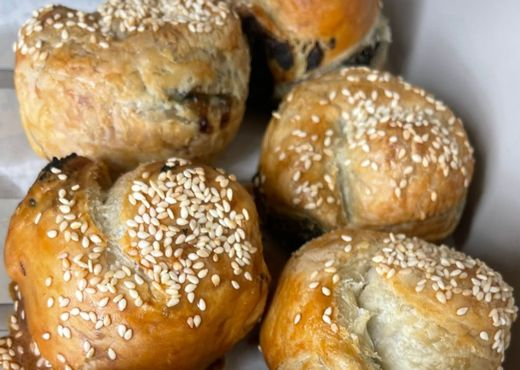
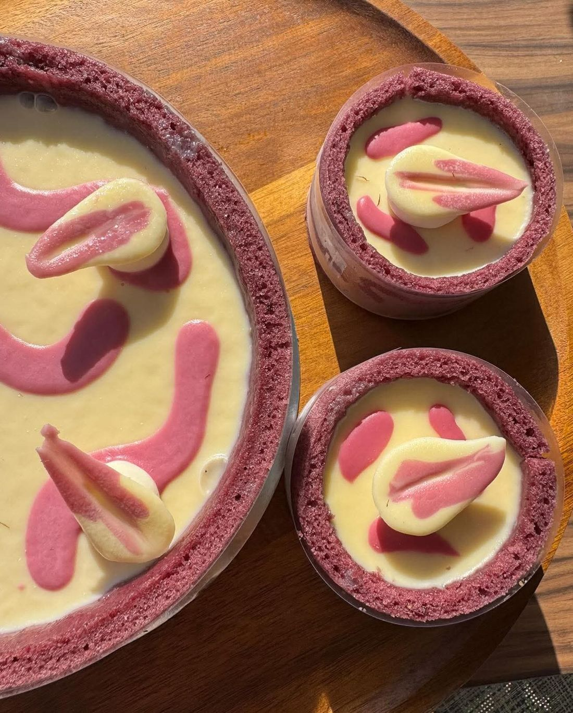
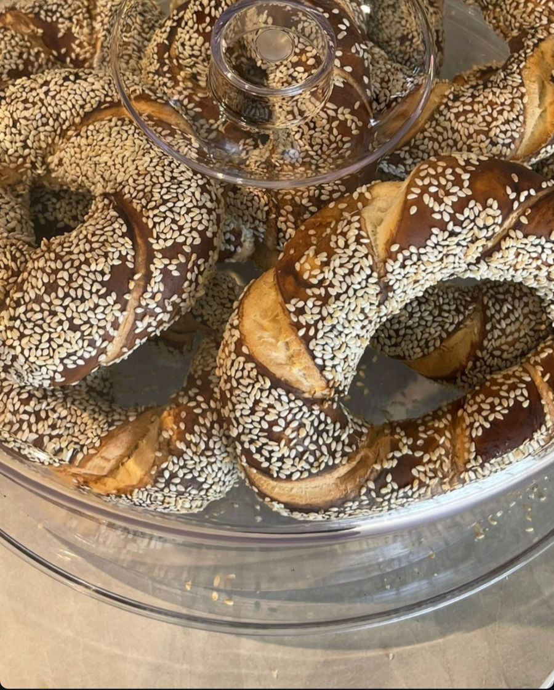
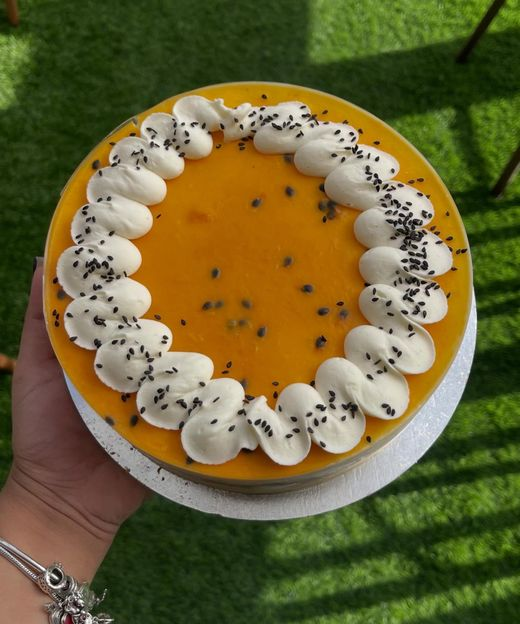
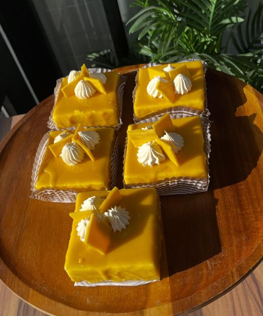
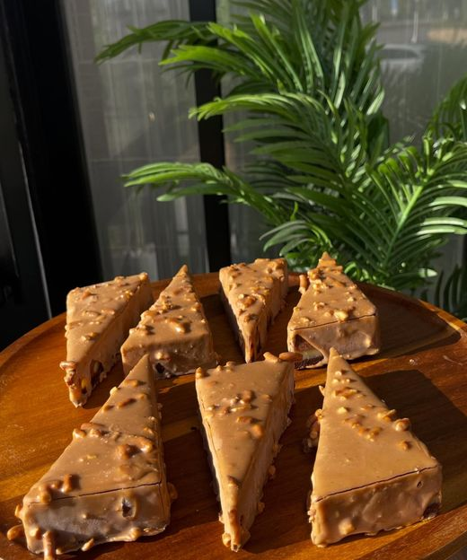
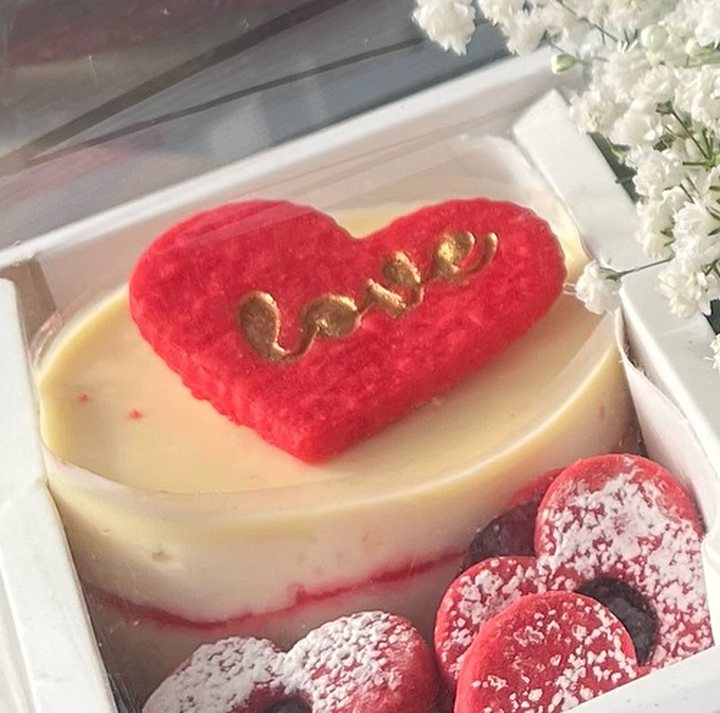
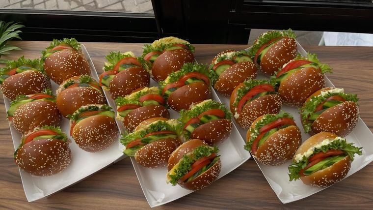
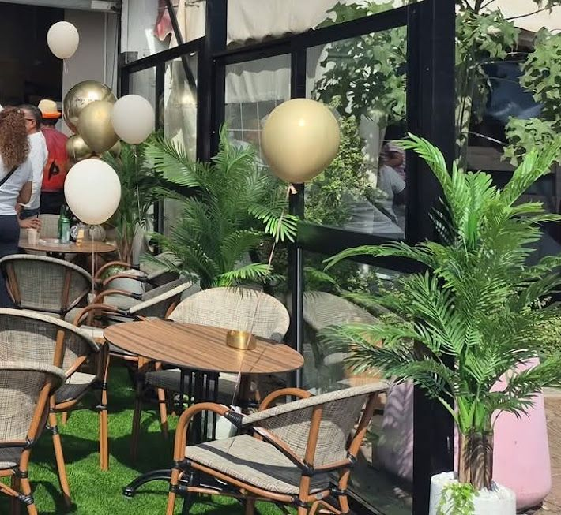

מאפים ובורקסים
בורקסים חמים, בייגלה, פילאס תרד וקרואסונים, ישר מהתנור.
הופכים את היום לטעים יותר
מאפייה ובית קפה כשר באשדוד. מאפים ובורקסים חמים משש בבוקר, קינוחים, כריכים, סלטים וקפה טוב, בישיבה או לדרך.


כל בוקר בשש הדלתות נפתחות והוויטרינה כבר מלאה: בורקסים חמים, בייגלה, באגטים ולחמניות, קינוחים אישיים ועוגות. לידם מחכים קפה, כריכים טריים וסלטים שמכינים במקום.
אפשר לחטוף קפה ומאפה בדרך לעבודה, ואפשר להישאר לשבת. מאפה גן עדן הוא עסק בבעלות אישה, והאירוח מורגש בכל פרט.
קינוחים אישיים שמכינים אצלנו, בשכבות של קרמים, מרנג ושוקולד. הנה כמה מהאהובים.

מרנג נוגט אגוזי לוז, קרם פסיפלורה וגנאש שוקולד לבן, בציפוי פסיפלורה טרייה.

מצע של מרנג אגוזי לוז, קרם מנגו וקרם וניל, בציפוי רוטב מנגו מרענן.

קרם שוקולד מריר וקרם ברולה על קראנץ׳ שוקולד בייגלה, בציפוי נוגט בייגלה קריספי במליחות עדינה.

קרם מסקרפונה עם תותים טריים וקריספי שוקולד לבן, בציפוי גנאש שוקולד לבן. לצידה עוגיות לבבות רד וולווט במילוי ריבת תות שדה.
מגשי האירוח שלנו ייחודיים, טריים וטעימים, לכל סוגי האירועים. ספרו לנו על האירוע, ונכין לכם מגש שמתאים לו.
ולמי שרוצה עוגה, היא לא רק עוגה, היא חוויה: עוגה מושקעת שנארזת בקופסה מהודרת, לימי הולדת, לאירועים או סתם לפינוק.
״הייתי עד לשיחה שלה עם לקוחה שבאה לאסוף אוכל שהזמינה לאירוע ונדהמה מהשפע בהשוואה למה שציפתה.״
שחף ש., ביקורת בגוגל


שולחנות עץ וכיסאות קלועים מתחת לפרגולה, בין דקלים ועציצים. בואו לקפה ומאפה, לארוחת בוקר, או סתם להתפנק במשהו מתוק.
5.028 ביקורות בגוגל
מקום מקסים. הקפה שלהם היה מצוין והמאפים שניסינו היו באיכות גבוהה מאוד, הרבה יותר ממה שאנחנו רגילים ממקומות אחרים. בהחלט מקום מומלץ, וכזה שמכבד את הלקוחות.
כריכים טריים, שירות עם חיוך, עוגיות ממש טעימות, וויי פיי, ואפילו יש חלב דל לקטוז! מומלץ מאוד למי שמחפש איפה לשבת לנוח או לקחת קפה ומאפה לדרך.
אוהבת את המקום הזה. אני, חברה שלי והמשפחה שלי תמיד יושבים שם. באמת אחלה שירות וקינוחים ממש טעימים, ממליצה מאוד.
אנחנו במבוא האתרוג 7 באשדוד. קפצו לקפה ומאפה, או שבו אצלנו לארוחת בוקר.
| כתובת | מבוא האתרוג 7, אשדוד |
|---|---|
| א׳-ה׳ | 06:00-20:00 |
| ו׳ וערבי חג | 06:00-17:00 |
| שבת | סגור |
| טלפון | 08-660-3536 |
| כשרות | בד״ץ בית יוסף |
| במקום | ישיבה במקום, וויי פיי |
מבוא האתרוג 7, אשדוד
המפה נטענת…